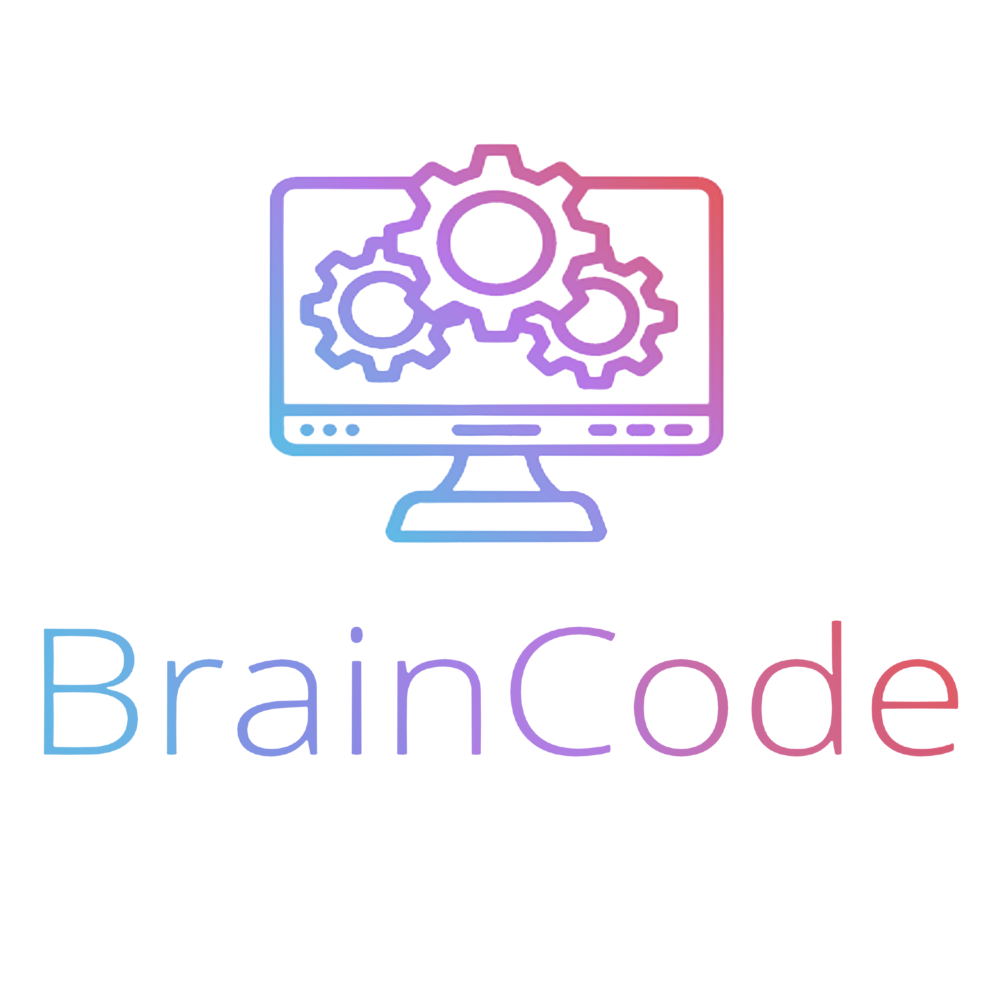

Curso de devs para devs
Bem-vindo ao nosso curso de programação!
Se você está interessado em aprender a programar, você veio ao lugar certo. Nosso curso é projetado para ensinar a você as habilidades necessárias para começar a escrever seus próprios programas em pouco tempo.
Nosso curso é adequado para iniciantes completos que nunca tiveram contato com programação antes, bem como para aqueles que têm alguma experiência e desejam aprimorar suas habilidades.
Nós fornecemos um ambiente de aprendizagem divertido e interativo, onde você pode progredir em seu próprio ritmo.
Durante o curso, você aprenderá a usar as linguagens de programação mais populares, como Python, Java, C++ e JavaScript.
Você também terá a oportunidade de trabalhar em projetos práticos, que ajudarão a consolidar suas habilidades de programação.
Nossos instrutores são profissionais experientes em programação,
que estão sempre disponíveis para ajudá-lo com qualquer dúvida ou dificuldade que possa surgir ao longo do curso. Além disso,
você terá acesso a uma comunidade de aprendizagem ativa, onde poderá se conectar com outros estudantes,
trocar ideias e colaborar em projetos conjuntos.
Ao concluir o curso, você estará pronto para começar a criar seus próprios programas, tanto para fins pessoais quanto profissionais.
E, se você decidir continuar a aprimorar suas habilidades de programação, nós também oferecemos cursos avançados em tópicos específicos, como desenvolvimento de aplicativos móveis, inteligência artificial e segurança cibernética.
Inscreva-se agora para começar sua jornada de aprendizado em programação!